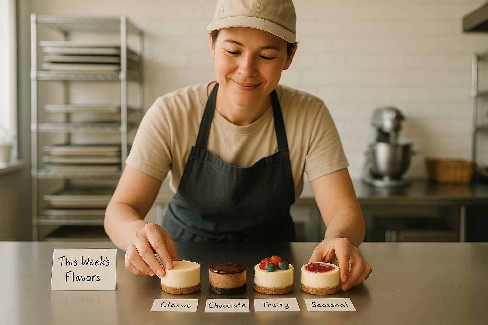

Every small food business hits this point: you're making great products, customers are asking for more, and suddenly your menu has doubled.
It feels like growth — but it can quietly turn into chaos. More flavors mean more ingredients, more prep time, more packaging, and often... less profit.
The truth is, one of the smartest moves a food entrepreneur can make is to simplify. Here's how focusing your menu can actually help you sell more — with less stress.
1. Why Simpler Menus Win
When you have too many products, it's not just your kitchen that gets cluttered — it's your brand. Customers hesitate when faced with too many choices. You hesitate when you're juggling recipes, shopping lists, and label designs.
Simplifying your menu makes everything easier:
- You produce faster and more consistently.
- Your display looks cleaner and more professional.
- Your customers remember what you're known for.
For most small-batch makers, 3 to 6 core flavors is the sweet spot:
- 3–4 flavors if you're selling at markets or pop-ups
- 4–6 flavors if you supply cafes or local retailers
- 7–8 only if you've scaled up with a team and systems
Pro Tip: Don't think "forever." Keep one flavor slot open for rotation. Swap it every few weeks to test new ideas — without complicating production.
2. The Cheesecake Example
One of our members started her business offering eight cheesecake flavors. They all sold, but production was exhausting — eight sets of toppings, labels, and ingredients for every bake.
She simplified to four: Classic Vanilla, Chocolate Swirl, Berry Burst, and a Rotating Seasonal Special.
Suddenly, prep was faster, waste dropped, and her display looked beautiful. Customers didn't miss the other flavors — they loved the clarity. Her repeat orders actually increased.
"It felt like I had space to breathe again. And people started buying two or three slices instead of one."
That's the power of focus. When your lineup feels intentional, your business feels established.
3. How to Choose Which Flavors Stay
Simplifying doesn't mean being boring. It means curating — choosing flavors that each serve a purpose. Here's a simple five-category framework that works for almost any product:
- Classic – your reliable favorite (like vanilla, plain, or original)
- Indulgent – your rich, premium option
- Fresh – bright, fruity, or herbal to balance your menu
- Signature – your creative twist that defines your brand
- Seasonal – a rotating flavor to keep regulars curious
If you're launching or streamlining, pick one from each. That's plenty of variety — without the overwhelm.
4. Keep It Efficient (and Profitable)
Before adding a new flavor or product, ask yourself:
- Does it use mostly the same ingredients or base recipe?
- Can it share packaging and labels with my existing products?
- Will it sell consistently enough to justify the extra work?
If the answer is "not really," it's better to wait.
Every flavor you make should earn its place — not just creatively, but financially. Try running your numbers through our Food Product Pricing Calculator to see which products actually make you money. Sometimes, removing one low-margin flavor can make your entire lineup more profitable.
5. Simplify. Then Grow.
Simplifying your menu isn't a step backward — it's the foundation for sustainable growth. Once your core lineup is solid, you'll have:
- Clearer systems
- Consistent production
- Loyal customers who trust your brand
From there, expansion becomes strategic, not stressful.
Simplify your menu. Boost your sales. It's not just a saying — it's how small food businesses turn passion into profit.
And if you're ready to refine your lineup and scale efficiently, our shared kitchen is here to help.
Book a tour today and see how we support local makers like you.